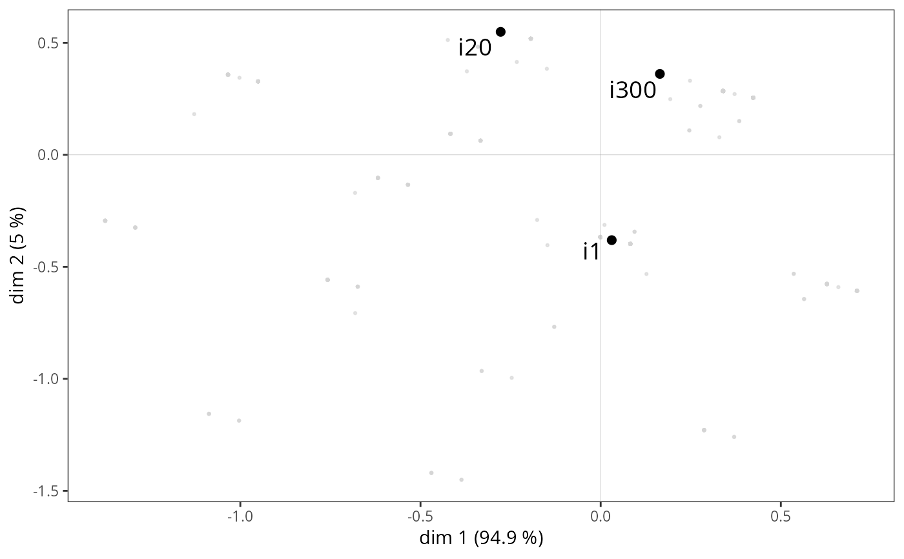

ggadd_supind.RdAdds supplementary individuals to a MCA cloud of the individuals, using the ggplot2 framework.
ggadd_supind(p, resmca, dfsup, axes=c(1,2), col="black", textsize=5, pointsize=2)ggplot object with the cloud of variables
object of class MCA, speMCA, csMCA, stMCA or multiMCA.
data frame with the supplementary individuals. It must have the same factors as the data frame used as input for the initial MCA.
numeric vector of length 2, specifying the dimensions (axes) to plot (default is c(1,2))
color for the labels and points of the individuals (default is black)
Size of the labels of the individuals. Default is 5.
Size of the points of the individuals. If NULL, only labels are plotted. Default is 2.
The function uses the row names of dfsup as labels for the individuals.
## Performs a specific MCA on 'Music' example data set
## ignoring every 'NA' (i.e. 'not available') categories,
## plots the cloud of individuals,
## and then adds individuals 1, 20 and 300 as supplementary individuals.
data(Music)
rownames(Music) <- paste0("i", 1:nrow(Music))
mca <- speMCA(Music[,1:5], excl=c(3,6,9,12,15))
p <- ggcloud_indiv(mca, col="lightgrey")
#> Warning: `guides(<scale> = FALSE)` is deprecated. Please use `guides(<scale> = "none")` instead.
ggadd_supind(p, mca, Music[c(1,20,300),1:5])
